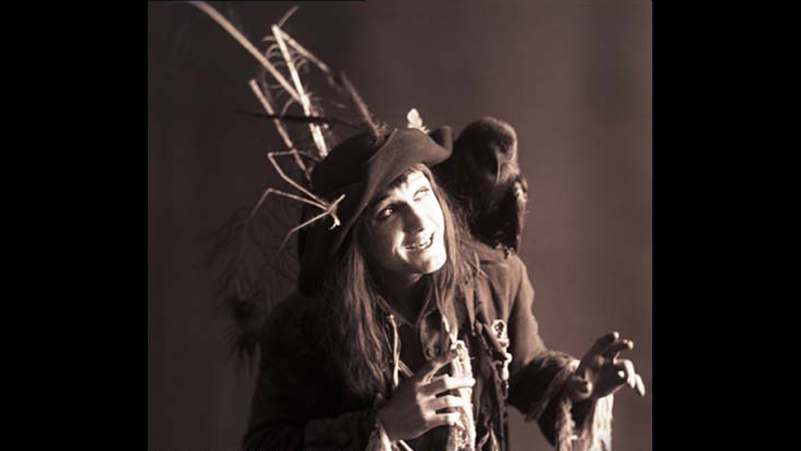

1915

CAST
Barnaby Rudge
-
Tom Powers
Emma Haresdale
-
Violet Hopson
Maypole Hugh
-
Stewart Rome
Dolly Varden
-
Chrissie White
Edward Chester
-
Lionelle Howard
Geoffrey Haredale
-
John MacAndrews
Sir John Chester
-
Henry Vibart
Lord George Gordon
-
Harry Gilbey
Dennis
-
Harry Royston
Simon Tappertit
-
Harry Buss
Mr. Rudge
-
William Felton
Gabriel Varden
-
William Langley
CREATIVE TEAM
Director
-
Thomas Bentley
Cecil M. Hepworth
Cecil M. Hepworth
Screenplay
-
Thomas Bentley
PRODUCTION
A 1915 British silent drama film directed by Thomas Bentley and Cecil M. Hepworth and starring Tom Powers, Stewart Rome and Violet Hopson. It was an adaptation of the novel which was set amidst the 1780 Gordon Riots in London.